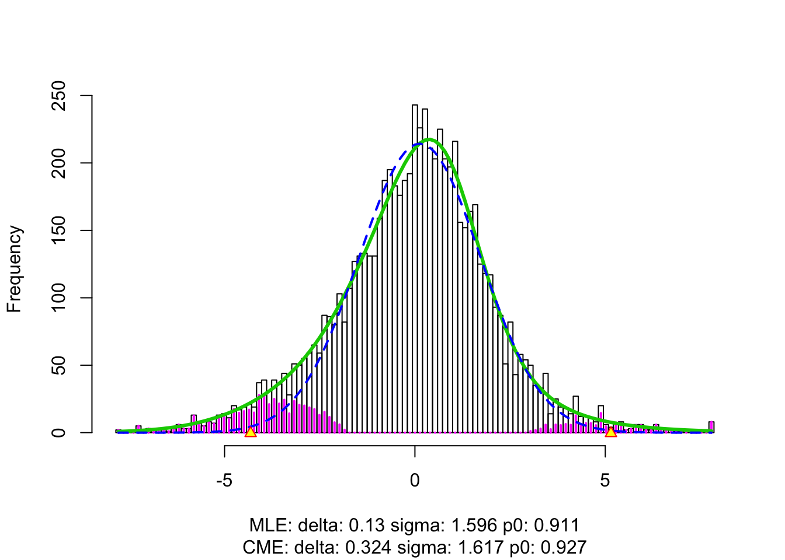
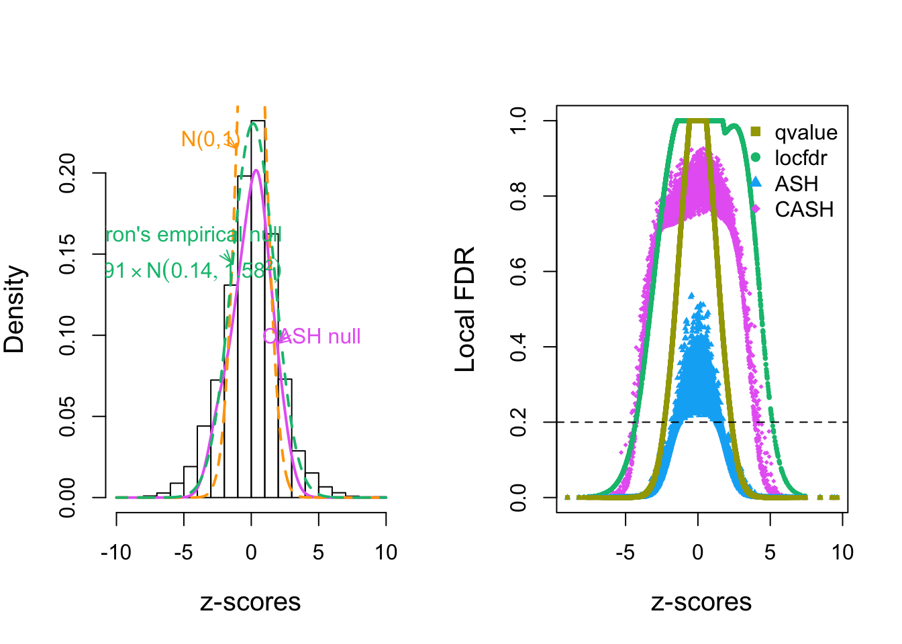

Re-Analyze Efron’s Leukemia Data
Lei Sun
2018-04-16
Last updated: 2018-05-11
Code version: 548070e
Introduction
source("../code/gdash_lik.R")
source("../code/gdfit.R")
library(limma)
library(locfdr)
library(scales)load("../data/LSI/leukdata.RData")
load("../data/LSI/leukz.RData")
design <- design <- c(rep(0, 47), rep(1, 25))temp <- locfdr(leukz)
Reproduce Efron’s empirical null analysis
t <- apply(leukdata, 1, function (x) {
t.test(x[design == 1], x[design == 0], var.equal = TRUE)$statistic
})
z <- -qnorm(pt(-abs(t), 70)) * sign(t)temp <- locfdr(z)Use Smyth’s pipeline to obtain better summary statistics
lim = limma::lmFit(leukdata, model.matrix(~design))
r.ebayes = limma::eBayes(lim)
p = r.ebayes$p.value[, 2]
t = r.ebayes$t[, 2]
z = -sign(t) * qnorm(p/2)fit.locfdr <- locfdr(z)
fit.qvalue <- qvalue::qvalue(p)CASH fitting
- betahat = sebetahat * z
betahat = lim$coefficients[, 2]
sebetahat = betahat / t
betahat = sebetahat * zfit.cash <- gdash(betahat, sebetahat, gd.ord = 10)
fit.ash <- ashr::ash(betahat, sebetahat, mixcompdist = "normal", method = "fdr")x.plot <- seq(-10, 10, length = 1000)
gd.ord <- 10
hermite = Hermite(gd.ord)
gd0.std = dnorm(x.plot)
matrix_lik_plot = cbind(gd0.std)
for (i in 1 : gd.ord) {
gd.std = (-1)^i * hermite[[i]](x.plot) * gd0.std / sqrt(factorial(i))
matrix_lik_plot = cbind(matrix_lik_plot, gd.std)
}
y.plot = matrix_lik_plot %*% fit.cash$w * fit.cash$fitted_g$pi[1]
method.col <- scales::hue_pal()(5)
# method.col <- c("#377eb8", "#984ea3", "#4daf4a", "#ff7f00", "#e41a1c")
par(mfrow = c(1, 2))
hist(z, prob = TRUE, main = "", xlab = expression(paste(z, "-scores")), cex.lab = 1.25)
lines(x.plot, y.plot, col = method.col[5], lwd = 2)
lines(x.plot, dnorm(x.plot), col =
"orange"
# method.col[2]
, lty = 2, lwd = 2)
lines(x.plot, dnorm(x.plot, fit.locfdr$fp0[3, 1], fit.locfdr$fp0[3, 2]) * fit.locfdr$fp0[3, 3], col = method.col[3], lty = 2, lwd = 2)
text(-3, 0.22, "N(0,1)", col = "orange")
text(-5, 0.15, bquote(atop("Efron's empirical null", .(round(fit.locfdr$fp0[3, 3], 2)) %*% N(.(round(fit.locfdr$fp0[3, 1], 2)), .(round(fit.locfdr$fp0[3, 2], 2))^2))), col = method.col[3])
text(4.5, 0.10, "CASH null", col = method.col[5])
arrows(-1.8, 0.22, -1.1, 0.215, length = 0.1, angle = 20, col = "orange")
arrows(-2, 0.15, -1.5, 0.145, length = 0.1, angle = 20, col = method.col[3])
arrows(2.9, 0.10, 2, 0.095, length = 0.1, angle = 20, col = method.col[5])
plot(z, fit.cash$lfdr, pch = 18, cex = 0.5, ylim = c(0, 1), col = method.col[5], ylab = "Local FDR", xlab = expression(paste(z, "-scores")), cex.lab = 1.25)
points(z, fit.locfdr$fdr, pch = 16, cex = 0.5, col = method.col[3])
points(z, ashr::get_lfdr(fit.ash), pch = 17, cex = 0.5, col = method.col[4])
points(z, fit.qvalue$lfdr, pch = 15, cex = 0.5, col = method.col[2])
abline(h = 0.2, lty = 2)
legend("topright", bty = "n", pch = 15 : 18, col = method.col[2 : 5], c("qvalue", "locfdr", "ASH", "CASH"))
- sebetahat = betahat / z
betahat = lim$coefficients[, 2]
sebetahat = betahat / zfit.cash2 <- gdash(betahat, sebetahat, gd.ord = 10)y.plot2 = matrix_lik_plot %*% fit.cash2$w * fit.cash2$fitted_g$pi[1]
par(mfrow = c(1, 2))
hist(z, prob = TRUE, main = "", xlab = expression(paste(z, "-scores")), cex.lab = 1.25)
lines(x.plot, y.plot, col = "red", lwd = 2)
lines(x.plot, y.plot2, col = "blue", lwd = 2)
lines(x.plot, dnorm(x.plot, fit.locfdr$fp0[3, 1], fit.locfdr$fp0[3, 2]) * fit.locfdr$fp0[3, 3], col = 'green', lty = 2, lwd = 2)
plot(z, fit.cash$lfdr, pch = 18, cex = 0.5, ylim = c(0, 1), col = "red", ylab = "Local FDR", xlab = expression(paste(z, "-scores")), cex.lab = 1.25)
points(z, fit.cash2$lfdr, pch = 17, cex = 0.5, col = "blue")
points(z, fit.locfdr$fdr, pch = 16, cex = 0.5, col = "green")
abline(h = 0.2, lty = 2)
legend("topright", bty = "n", pch = c(16, 18, 17), col = c("green", "red", "blue"), c("qvalue", "CASH: 1", "CASH: 2"))- sebetahat = betahat / z
betahat = lim$coefficients[, 2]
sebetahat = betahat / zfit.cash <- gdash(betahat, sebetahat, gd.ord = 10)
fit.ash <- ashr::ash(betahat, sebetahat, mixcompdist = "normal", method = "fdr")x.plot <- seq(-10, 10, length = 1000)
gd.ord <- 10
hermite = Hermite(gd.ord)
gd0.std = dnorm(x.plot)
matrix_lik_plot = cbind(gd0.std)
for (i in 1 : gd.ord) {
gd.std = (-1)^i * hermite[[i]](x.plot) * gd0.std / sqrt(factorial(i))
matrix_lik_plot = cbind(matrix_lik_plot, gd.std)
}
y.plot = matrix_lik_plot %*% fit.cash$w * fit.cash$fitted_g$pi[1]
method.col <- scales::hue_pal()(5)
# method.col <- c("#377eb8", "#984ea3", "#4daf4a", "#ff7f00", "#e41a1c")
setEPS()
postscript("../output/fig/leukemia.eps", height = 5, width = 12)
par(mfrow = c(1, 2))
hist(z, prob = TRUE, main = "", xlab = expression(paste(z, "-score")), cex.lab = 1.25)
lines(x.plot, y.plot, col = method.col[5], lwd = 2)
lines(x.plot, dnorm(x.plot), col =
"orange"
# method.col[2]
, lty = 2, lwd = 2)
lines(x.plot, dnorm(x.plot, fit.locfdr$fp0[3, 1], fit.locfdr$fp0[3, 2]) * fit.locfdr$fp0[3, 3], col = method.col[3], lty = 2, lwd = 2)
text(-3, 0.22, "N(0,1)", col = "orange")
text(-5, 0.15, bquote(atop("Efron's empirical null", .(round(fit.locfdr$fp0[3, 3], 2)) %*% N(.(round(fit.locfdr$fp0[3, 1], 2)), .(round(fit.locfdr$fp0[3, 2], 2))^2))), col = method.col[3])
text(4.5, 0.10, "CASH null", col = method.col[5])
arrows(-1.8, 0.22, -1.1, 0.215, length = 0.1, angle = 20, col = "orange")
arrows(-2, 0.15, -1.5, 0.145, length = 0.1, angle = 20, col = method.col[3])
arrows(2.9, 0.10, 2, 0.095, length = 0.1, angle = 20, col = method.col[5])
plot(z, fit.cash$lfdr, pch = 18, cex = 0.5, ylim = c(0, 1), col = method.col[5], ylab = "Local FDR", xlab = expression(paste(z, "-score")), cex.lab = 1.25)
points(z, fit.locfdr$fdr, pch = 16, cex = 0.5, col = method.col[3])
points(z, ashr::get_lfdr(fit.ash), pch = 17, cex = 0.5, col = method.col[4])
points(z, fit.qvalue$lfdr, pch = 15, cex = 0.5, col = method.col[2])
abline(h = 0.2, lty = 2)
legend("topright", bty = "n", pch = 15 : 18, col = method.col[2 : 5], c("qvalue", "locfdr", "ASH", "CASH"))
dev.off()quartz_off_screen
2 setEPS()
postscript("../output/fig/leukemia_q.eps", height = 5, width = 12)
par(mfrow = c(1, 2))
hist(z, prob = TRUE, main = "", xlab = expression(paste(z, "-score")), cex.lab = 1.25)
lines(x.plot, y.plot, col = method.col[5], lwd = 2)
lines(x.plot, dnorm(x.plot), col =
"orange"
# method.col[2]
, lty = 2, lwd = 2)
lines(x.plot, dnorm(x.plot, fit.locfdr$fp0[3, 1], fit.locfdr$fp0[3, 2]) * fit.locfdr$fp0[3, 3], col = method.col[3], lty = 2, lwd = 2)
text(-3, 0.22, "N(0,1)", col = "orange")
text(-5, 0.15, bquote(atop("Efron's empirical null", .(round(fit.locfdr$fp0[3, 3], 2)) %*% N(.(round(fit.locfdr$fp0[3, 1], 2)), .(round(fit.locfdr$fp0[3, 2], 2))^2))), col = method.col[3])
text(4.5, 0.10, "CASH null", col = method.col[5])
arrows(-1.8, 0.22, -1.1, 0.215, length = 0.1, angle = 20, col = "orange")
arrows(-2, 0.15, -1.5, 0.145, length = 0.1, angle = 20, col = method.col[3])
arrows(2.9, 0.10, 2, 0.095, length = 0.1, angle = 20, col = method.col[5])
plot(z, z, ylim = c(0, 1), ylab = expression(paste(q, "-value")), xlab = expression(paste(z, "-score")), cex.lab = 1.25, type = "n")
points(z, fit.cash$qvalue, pch = 25, cex = 0.25, col = method.col[5])
points(z, p.adjust(p, method = "BH"), pch = 21, cex = 0.25, col = method.col[1])
points(z, fit.qvalue$qvalues, pch = 22, cex = 0.25, col = method.col[2])
points(z, ashr::qval.from.lfdr(fit.locfdr$fdr), pch = 23, cex = 0.25, col = method.col[3])
points(z, ashr::get_qvalue(fit.ash), pch = 24, cex = 0.25, col = method.col[4])
abline(h = 0.1, lty = 2)
legend("topright", bty = "n", pch = 21 : 25, col = method.col[1 : 5], c("BHq", "qvalue", "locfdr", "ASH", "CASH"))
dev.off()quartz_off_screen
2 HIV
load("../data/LSI/hivdata.RData")
load("../data/LSI/hivz.RData")
design <- rep(0 : 1, each = 4)Reproduce Efron’s empirical null analysis
temp <- locfdr(hivz)Use Smyth’s pipeline to obtain better summary statistics
loghivdata <- log2(hivdata)
loghivdata <- limma::normalizeBetweenArrays(loghivdata)
lim = limma::lmFit(loghivdata, model.matrix(~design))
r.ebayes = limma::eBayes(lim)
p = r.ebayes$p.value[, 2]
t = r.ebayes$t[, 2]
z = -sign(t) * qnorm(p/2)fit.locfdr <- locfdr(z)fit.qvalue <- qvalue::qvalue(p)CASH fitting
- sebetahat = betahat / z
betahat = lim$coefficients[, 2]
sebetahat = betahat / zfit.cash <- gdash(betahat, sebetahat, gd.ord = 10)
fit.ash <- ashr::ash(betahat, sebetahat, mixcompdist = "normal", method = "fdr")x.plot <- seq(-7, 5, length = 1000)
gd.ord <- 10
hermite = Hermite(gd.ord)
gd0.std = dnorm(x.plot)
matrix_lik_plot = cbind(gd0.std)
for (i in 1 : gd.ord) {
gd.std = (-1)^i * hermite[[i]](x.plot) * gd0.std / sqrt(factorial(i))
matrix_lik_plot = cbind(matrix_lik_plot, gd.std)
}
y.plot = matrix_lik_plot %*% fit.cash$w * fit.cash$fitted_g$pi[1]
method.col <- scales::hue_pal()(5)
par(mfrow = c(1, 2))
hist(z, prob = TRUE, main = "", xlab = expression(paste(z, "-scores")), cex.lab = 1.25, breaks = 50)
lines(x.plot, y.plot, col = method.col[5], lwd = 2)
lines(x.plot, dnorm(x.plot), col =
"orange"
# method.col[2]
, lty = 2, lwd = 2)
lines(x.plot, dnorm(x.plot, fit.locfdr$fp0[3, 1], fit.locfdr$fp0[3, 2]) * fit.locfdr$fp0[3, 3], col = method.col[3], lty = 2, lwd = 2)
text(-3, 0.22, "N(0,1)", col = "orange")
text(-5, 0.15, bquote(atop("Efron's empirical null", .(round(fit.locfdr$fp0[3, 3], 2)) %*% N(.(round(fit.locfdr$fp0[3, 1], 2)), .(round(fit.locfdr$fp0[3, 2], 2))^2))), col = method.col[3])
text(4.5, 0.10, "CASH null", col = method.col[5])
arrows(-1.8, 0.22, -1.1, 0.215, length = 0.1, angle = 20, col = "orange")
arrows(-2, 0.15, -1.5, 0.145, length = 0.1, angle = 20, col = method.col[3])
arrows(2.9, 0.10, 2, 0.095, length = 0.1, angle = 20, col = method.col[5])
plot(z, fit.cash$lfdr, pch = 18, cex = 0.5, ylim = c(0, 1), col = method.col[5], ylab = "Local FDR", xlab = expression(paste(z, "-scores")), cex.lab = 1.25)
points(z, fit.locfdr$fdr, pch = 16, cex = 0.5, col = method.col[3])
points(z, ashr::get_lfdr(fit.ash), pch = 17, cex = 0.5, col = method.col[4])
points(z, fit.qvalue$lfdr, pch = 15, cex = 0.5, col = method.col[2])
abline(h = 0.2, lty = 2)
legend("topleft", bty = "n", pch = 15 : 18, col = method.col[2 : 5], c("qvalue", "locfdr", "ASH", "CASH"))Session information
sessionInfo()R version 3.4.3 (2017-11-30)
Platform: x86_64-apple-darwin15.6.0 (64-bit)
Running under: macOS High Sierra 10.13.4
Matrix products: default
BLAS: /Library/Frameworks/R.framework/Versions/3.4/Resources/lib/libRblas.0.dylib
LAPACK: /Library/Frameworks/R.framework/Versions/3.4/Resources/lib/libRlapack.dylib
locale:
[1] en_US.UTF-8/en_US.UTF-8/en_US.UTF-8/C/en_US.UTF-8/en_US.UTF-8
attached base packages:
[1] stats graphics grDevices utils datasets methods base
other attached packages:
[1] scales_0.5.0 locfdr_1.1-8 limma_3.34.4
[4] ashr_2.2-2 Rmosek_8.0.69 PolynomF_1.0-1
[7] CVXR_0.95 REBayes_1.2 Matrix_1.2-12
[10] SQUAREM_2017.10-1 EQL_1.0-0 ttutils_1.0-1
loaded via a namespace (and not attached):
[1] gmp_0.5-13.1 Rcpp_0.12.16 pillar_1.0.1
[4] plyr_1.8.4 compiler_3.4.3 git2r_0.21.0
[7] R.methodsS3_1.7.1 R.utils_2.6.0 iterators_1.0.9
[10] tools_3.4.3 digest_0.6.15 bit_1.1-12
[13] tibble_1.4.1 gtable_0.2.0 evaluate_0.10.1
[16] lattice_0.20-35 rlang_0.1.6 foreach_1.4.4
[19] yaml_2.1.18 parallel_3.4.3 Rmpfr_0.6-1
[22] ECOSolveR_0.4 stringr_1.3.0 knitr_1.20
[25] rprojroot_1.3-2 bit64_0.9-7 grid_3.4.3
[28] qvalue_2.10.0 R6_2.2.2 rmarkdown_1.9
[31] reshape2_1.4.3 ggplot2_2.2.1 magrittr_1.5
[34] splines_3.4.3 MASS_7.3-47 backports_1.1.2
[37] codetools_0.2-15 htmltools_0.3.6 scs_1.1-1
[40] assertthat_0.2.0 colorspace_1.3-2 stringi_1.1.6
[43] lazyeval_0.2.1 munsell_0.4.3 doParallel_1.0.11
[46] pscl_1.5.2 truncnorm_1.0-7 R.oo_1.21.0 This R Markdown site was created with workflowr